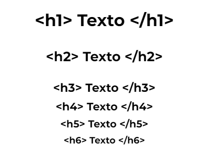
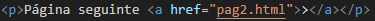

Esta página tem como propósito unificar em um único arquivo todo o conhecimento adquirido durante o curso ministrado pelo professor Gustavo Guanabara, do Curso em Vídeo, servindo como uma ferramenta prática para revisão e aplicação dos conceitos aprendidos
Todo programador deve ter uma pasta organizada, quando o projeto começar a ter diversas pastas e arquivos, importante manter tudo separado e organizado para não se perder!
Para criação de parágrafos, basta utilizar a tag <p> e </p>, entre as tags você poderá digitar o texto que quiser, para dar "enter" e criar uma quebra de linha, basta utilizar a tag <br>. Se for necessário um espaçamento muito grande, melhor configurar em CSS.
Para utilização de emojicons: acesse emojipedia, basta copiar o cógido e colar no seu código HTML utilizando o código "&#x" na frente do código do emoji. 🙃
Para seu site funcionar da melhor maneira, é necessário que ele seja leve, um item que pode acabar pesando em seu site são as imagens, para isso, você pode usar o seu photoshop ou o GIMP para reduzir sua imagem para uma resolução menor, desta forma você pode deixar a imagem do tamanho que vc precisa e não pesar na hora de carregar seu site.
OBS:Reduzir o tamanho utilizando os 4 cantos da imagem não reduz o tamanho do arquivo em si, por isso importante redimencionar a imagem, desta forma o arquivo também fica mais leve.
Para carregar uma imagem em HTML basta utilizar o comando <img src "link da imagem" alt = "colocar uma descrição da imagem">
O link da imagem pode ser tanto de um arquivo interno do seu computador, como um link de algum site, neste caso no lugardo link da imagem, em vez de colocar o caminho do seu computador basta colocar o endereço completo do site.
Para adicionar um icone junto ao título do site, basta procurar uma logo que seja ideal para seu site(se atentar aos direitos autorais)acessar favicon, esse é um dos sites que podem ser utilizados para converter sua imagem em um arquivo "favicon.io" para uso no site.
Após gerar a imagem de logo, basta ir na área Head acima do item Title e utilizar a tag <link:favicon>, selecionar a foto na sua pasta e carregar a pagina.
Para ver como sua página está ficando há 2 opções:
Hierarquias de títulos desempenham um papel crucial na estruturação e organização de um site, tanto em termos de usabilidade quanto de otimização para mecanismos de busca. Os títulos são elementos fundamentais do HTML, fornecendo não apenas estilo visual, mas também informações sobre a importância e o conteúdo de uma página.
Em um site o recomendado é que tenha apenas 1 H1 para indicar o titulo principal. A hierarquia de títulos é geralmente representada por tags HTML como <h1>, <h2>, <h3>, <h4>, <h5>, e <h6>, onde <h1> é o título mais importante e <h6> é o menos importante.

Tags HTML desempenham um papel fundamental na atribuição de significado ao conteúdo de uma página da web, tornando-o semântico e facilitando a compreensão tanto para os navegadores quanto para os mecanismos de busca. A semântica em HTML é fundamental porque fornece significado e estrutura ao conteúdo de uma página da web.
Exemplo: <blockquote cite="https://github.com/gustavoguanabara/html-css/tree/master/aulas-pdf">
OBS: As tags devem ter abertura e fechamento.
OBS 2: Uma forma de facilitar no momento de montar a estrutura do seu site e adicionar as tags é digitar o inicio da tag e apertar tab no teclado. Ex: quero adicionar a tag <p>, apenas digitando p e apertando a tecla tab fará com que a tag seja aberta e fechada, sendo necessário apenas a inclusão do conteúdo.
Está gostando do conteúdo até aqui? siga meu perfil no GitHub para conhecer outros projetos clicando aqui
Como você pôde ver acima, é possível colocar no seu site um link para outro site, basta utilizar a tag <a href="https://github.com/anac-silva" target="_blank" rel="external" >. Utilizando dentro do link _blank é possível abrir o link em outra guia sem perder o site que estava aberto, facilitando a navegação do usuário.
Há dois tipos de link: Interno e Externo.
Link interno é quando o usuário irá navegar dentro do próprio site, então no lugar de "_blank", basta utilizar "_self" e "external" utilizar "next"
Quando você vai criar um site, é necessário a criação de várias páginas, para facilitar o acesso, pode ser gerado o link dentro do próprio site:

O exemplo acima pode ser utilizado para quando quizer que o usuário mude de página ao clicar em um texto. Para uso de imagem, basta adicionar o link da imagem no lugar do texto para que o usuário consiga mudar de página ao clicar.
Para retornar a página basta utilizar o mesmo link, porém se a página estiver em pastas separadas para sair da pasta e acessar o outro arquivo é necessário adicionar ../"nome do arquivo".
Dentro da página é possível colocar links para dowload de arquivos, porém é necessário se atentar os formatos, pois nem todos navegadores suportam. Isso vale para audio e vídeo também. Para adicionar basta utilizar a tag:
<a href="nome do arquivo.pdf" download="nome do arquivo.pdf" type="application/pdf">nome que aparecerá para a pessoa clicar e baixar</a>
Há 2 tipos de listas em HTML: as ordenadas e as não ordenadas, para criar uma lista ordenada, basta utilizar a tag <ol> e dentro da tag utilizar <li> para identificar cada item da lista. (lembrando que as tags devem ter abertura e fechamento, com excessão da tag <li>, que no HTML5 passou a ter o fechamento opicional)
As listas ordenadas, possuem um parâmetro type, onde pode ser alterado o marcador da lista:
Para alterar o marcador basta utilizar dentro da tag o comando type="parâmetro" start="de onde começa a lista"
Start é mais utilizado quando há necessidade da lista começar a partir do 1. Quanto aos parâmetros temos: 1(listas numeradas), A(listas alfabéticas maiusculas), a(listas alfabéticas minusculas), I(listas com numeros romanos maiusculas), i(listas com numeros romanos minusculas)